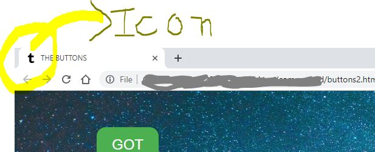
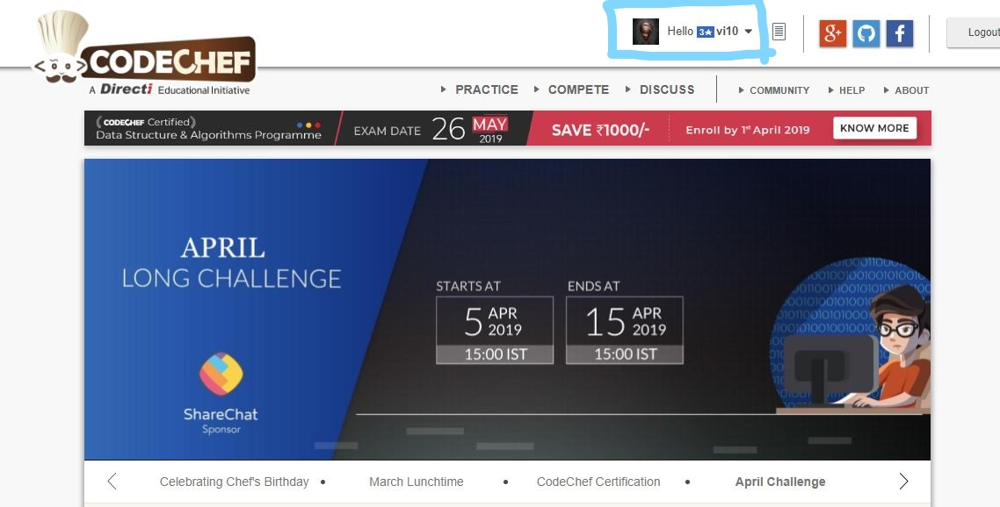

THE REQUIREMENTS FOR THIS WEBSITE ...📋
- Motive to Impress👨🎤
- Dedication Towards your work 👨🏫
- Believe in yourself🧓
- A man has to be a keen observer🧐🕵️♂️
- A bit of HTML, CSS & J.S 😆#iam_nooby
WHAT IS THE PURPOSE OF THIS !?
TO BE HONEST TVS(TanVi Singh) I MYSELF DON'T KNOW ABOUT IT !😅
BUT THEN THERE WAS This Some Sort Of An Internal Feeling Which Kept me pushing 🧚♀️ Until I Made This.👨✈️
If Someone Reminds You Of Someone then u must talk to them
Skills Used .^-^.
- The Most Imp. part was Mujhe iske liye HTML ke Tags ko acche se padhna padha🧔.
- Then Uske Baad J.S 🤯 padhne me to tote udd gaye uske codes samajhne me ...😬,
but somehow i managed and it helped me too.
- The Most Dimaag khaau part was CSS😵.
Kaafi Zyada Sochna pada CSS waale part me fine details of every single page,
appearance of page ,outlook and all of that 🤭 but when i get the feel of i was quite happy ☺️ 🤗
- THE logo making was one of the most important part 💂 as i wanted to imprint every page
with a special logo #UNIQUENESS👨🏼🎨.
- Then after that Maine ek or skill use kri & that was Watermark.
how to add a watermark to a picture 😅 as u can clearly see watermark on every picture #10VI
that is for one purpose only i.e these pics belongs to u,they r related to u.❕
- Then after that i learned how to set an icon for every webpage & every page has its own icon i.e
👇

- The one thing that i really wanted is to give the realistic touch to this website
or ye chiz mai html,css,js... etc ka use krke to nhi kr skta tha.
The only way to make a scene realistic is to do it in REAL🙂. SO i decided to do a real thing
and that was coding🤖.I hope that u must have heared about CODECHEF👨🍳.
I made a new account on CODECHEF and Participated in March Long Challange and guess what happened..
i made a progress from a 0 star to a 3 star (not full fledged😅) coder👨🏽💻 on CODECHEF.
All i did this because i had to keep the worth of the name or should i say the username which is vi10🧚.
I am adding a snapshot of CODECHEF account and if u have an account on CODECHEF
then u can check my acoount easily by searching the username vi10
& if u don't have the one then ask any of your friend & get it verified(without telling them the whole story).
👇🏻

- Another real thing that i used is the picture of the chocolates🍫.I clicked all the pics from my camera 📸.
- Video and Audio compression,cropping was one of the minor things🔧 .
- GITHUB (open source),One Of the Challanging Task was to Host this WEBSITE,Make it Live.
So I Learned about GITHUB and i was quite impressed by knowing it's Dynamic attributes.
I was also able to figure out a Suitable Domain Name i.e "irongirl13.github.io".😇 🤠
- Last but not the least the most engaging part was the making of the collage,
the picture which i used in the login page .It took me hours for getting the desired collag,
adjusting the login window and setting up the marquee tag (haha).
U know sometimes these minute details takes more time🕑 than exeptations⚜️.